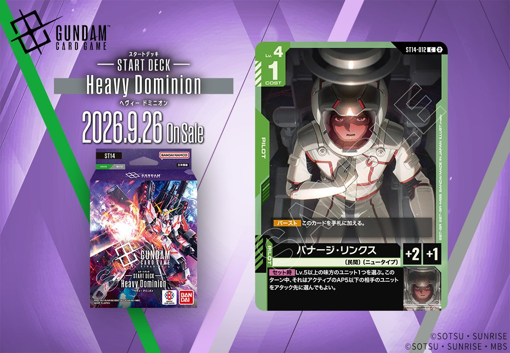
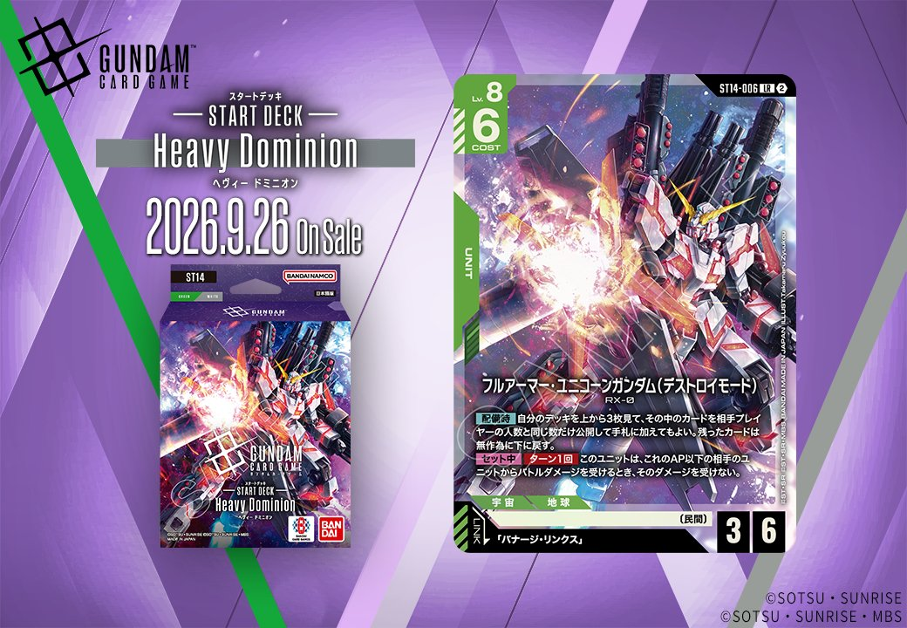
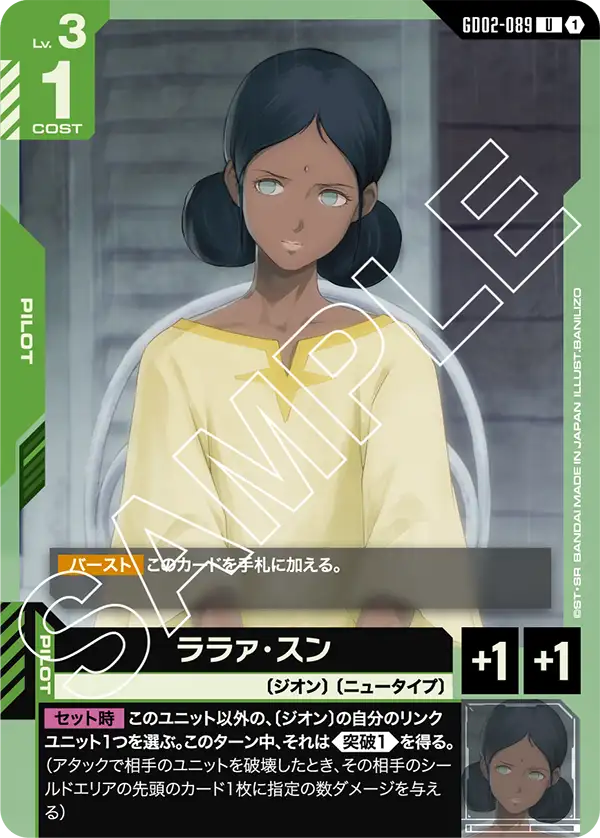
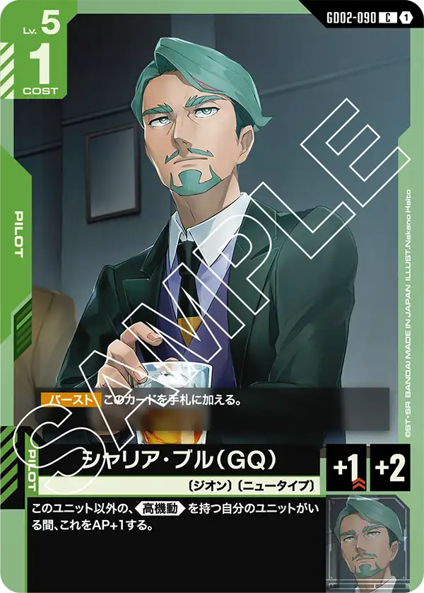

Generation Pulse(ST14)より、同日公開のUNITとPILOTがリンクで結ばれる組合せを紹介します。緑のUNIT「フルアーマー・ユニコーンガンダム(デストロイモード)」(ST14-006)は、リンク条件に「バナージ・リンクス」を指定しており、同じく緑のPILOT「バナージ・リンクス」(ST14-012)と組み合わせることでリンク条件が成立する2枚構成です。いずれも2026-09-26発売で、リンクを前提に設計された組合せとして運用できる点が特徴です。

バナージ・リンクス (ST14-012)
| 色 | 緑 | タイプ | PILOT |
| Lv | 4 | コスト | 1 |
| 補正 AP | 2 | 補正 HP | 1 |
| 特徴 | 〔民間〕、〔ニュータイプ〕 | ||
効果: 【バースト】このカードを手札に加える。【セット時】Lv.5以上の味方のユニット1つを選ぶ。このターン中、それはアクティブのAP5以下の相手のユニットをアタック先に選んでもよい。
バナージ・リンクス(ST14-012)はLv.4/COST1のパイロット。【セット時】でLv.5以上の味方ユニット1つに、このターンアクティブのAP5以下の相手ユニットをアタック先に選べる能力を付与し、通常は狙えないアクティブユニットへ攻めを通せる点が特徴です。 同日公開のフルアーマー・ユニコーンガンダム(デストロイモード)(ST14-006)とはリンクが成立し、同ユニットはLv.5以上かつ【セット中】でAP以下の相手ユニットからのバトルダメージを受けない常駐効果を持つため、このセット時効果でアクティブなAP5以下の相手ユニットへ安全にアタックしやすい組合せとなります。 〔民間〕〔ニュータイプ〕を持ち緑のニュータイプ関連カードと特徴を共有します。2026-09-26発売のST14収録カードです。

フルアーマー・ユニコーンガンダム(デストロイモード) (ST14-006)
| 色 | 緑 | タイプ | UNIT |
| Lv | 8 | コスト | 6 |
| AP | 3 | HP | 6 |
| 特徴 | 〔民間〕 | ||
| リンク条件 | 「バナージ・リンクス」 | ||
効果: 【配備時】自分のデッキを上から3枚見て、その中のカードを相手プレイヤーの人数と同じ数だけ公開して手札に加えてもよい。残ったカードは無作為に下に戻す。【セット中】ターン1回 このユニットは、これのAP以下の相手のユニットからバトルダメージを受けるとき、そのダメージを受けない。
COST6でAP3/HP6、【配備時】に相手プレイヤー人数分を公開して手札に加えられる手札補充と、【セット中】ターン1回のAP以下ダメージ無効が特徴の緑ユニット。低APの相手ユニットからの反撃を受け流しつつ盤面に残りやすい。 同日公開の「バナージ・リンクス」(ST14-012)とリンク成立し、【セット時】でLv.5以上の味方にAP5以下の相手アクティブユニットをアタック先に選ばせる効果を併用できる。両効果はトリガーが異なるため独立した運用だが、同一ユニット上でLv8本体を活かせる組合せだ。 発売は2026-09-26。

関連カード
-
 シャア・アズナブル(ST03-011)緑系デッキ内採用率9% (419デッキ)
シャア・アズナブル(ST03-011)緑系デッキ内採用率9% (419デッキ) -
 シュウジ・イトウ(ST06-010)緑系デッキ内採用率0.6% (28デッキ)
シュウジ・イトウ(ST06-010)緑系デッキ内採用率0.6% (28デッキ) -

ララァ・スン(GD02-089)緑系デッキ内採用率0.1% (3デッキ) -

シャリア・ブル（GQ）(GD02-090)緑系デッキ内採用率0.1% (3デッキ) -
フルアーマー・ユニコーンガンダム(デストロイモード)(ST14-006)NEW緑系 — 同色・共通特徴: 民間（新カード）
-
バナージ・リンクス(ST14-012)NEW緑系 — 同色・共通特徴: 民間（新カード）
-
 ウイングガンダムゼロ(GD01-024)緑系デッキ内採用率15.3% (713デッキ)
ウイングガンダムゼロ(GD01-024)緑系デッキ内採用率15.3% (713デッキ) -
 ウイングガンダム(ST02-001)緑系デッキ内採用率14.7% (682デッキ)
ウイングガンダム(ST02-001)緑系デッキ内採用率14.7% (682デッキ) -
 ヒイロ・ユイ(ST02-010)緑系デッキ内採用率14.6% (680デッキ)
ヒイロ・ユイ(ST02-010)緑系デッキ内採用率14.6% (680デッキ) -
 ピースミリオン(GD03-125)緑系デッキ内採用率14.2% (659デッキ)
ピースミリオン(GD03-125)緑系デッキ内採用率14.2% (659デッキ)